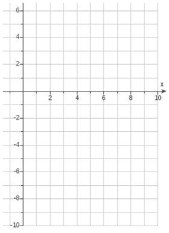

Logarithmic Functions and Equations
Logarithmic Functions
Take a look back at the graph of \(y=a^x\), specifically when \(a>1\), and notice some of its features once more. We will use one special fact about this function as motivation for today’s lecture.
Use this space to review the graph of \(y=2^x\) and its one-to-one behavior.
The Logarithm
Since exponential functions are one-to-one, then we know that there must exist an inverse function for them. What exactly does this look like? Take the function \(y=2^x\), and use it to sketch the graph of its inverse to get a feel for what this new function looks like.
Example 1
Complete the tables for \(y=2^x\) and its inverse, then sketch both graphs.
| \(x\) | \(y=2^x\) |
|---|---|
| \(-3\) | \(\frac{1}{8}\) |
| \(-2\) | \(\frac{1}{4}\) |
| \(-1\) | \(\frac{1}{2}\) |
| \(0\) | \(1\) |
| \(1\) | \(2\) |
| \(2\) | \(4\) |
| \(3\) | \(8\) |
| \(x\) | \(y\) |
|---|---|
| \(\frac{1}{8}\) | \(-3\) |
| \(\frac{1}{4}\) | \(-2\) |
| \(\frac{1}{2}\) | \(-1\) |
| \(1\) | \(0\) |
| \(2\) | \(1\) |
| \(4\) | \(2\) |
| \(8\) | \(3\) |

This inverse function is what we call a logarithm.
Definition
A logarithmic function with base \(a\), where \(a>0\) and \(a\neq 1\), is denoted by
\[y=\log_a(x)\]
This is read as “\(y\) equals the logarithm, base \(a\), of \(x\).”
It is defined by the equivalent equation
\[x=a^y\]
This means that the logarithm itself is the exponent you raise the base to in order to achieve some value \(x\).
Note
The form \(x=a^y\), while defining the logarithm, is not in the “input-output” form we usually use. That is why we write \(y=\log_a(x)\), which looks like “input \(x\), output \(y\).”
Two Forms of the Logarithm
When dealing with logarithmic equations and expressions, it is important to switch easily between their logarithmic and exponential forms.
Key Relationship
\(\log_a(N)=M\)
is equivalent to
\(a^M=N\)
Example 2
Rewrite each logarithmic expression into its equivalent exponential form.
-
\(3=\log_4(64)\)
\(4^3=64\)
-
\(\log_2(32)=5\)
\(2^5=32\)
-
\(\log(100)=2\)
\(10^2=100\)
-
\(\log_{1.2}(m)=3\)
\((1.2)^3=m\)
Example 3
Rewrite each expression into an equivalent form with the word “log.”
-
\(5=2^x\)
\(\log_2(5)=x\)
-
\(10^x=3\)
\(\log(3)=x\)
-
\(e^7=T\)
\(\ln(T)=7\)
-
\(a^b=c\)
\(\log_a(c)=b\)
Change of Base Formula
When solving equations, it is helpful to use a calculator to approximate solutions. Most calculators handle logarithms with base \(10\) or base \(e\), so the change of base formula lets us rewrite other logarithms.
Change of Base Formula
\[\log_a(b)=\dfrac{\log_x(b)}{\log_x(a)}\]
You can choose a convenient base \(x\), usually base \(10\) or base \(e\).
Example 4
Rewrite \(\log_3(10)\) using the change of base formula so you can estimate it on a calculator. Write it with both base \(10\) and base \(e\).
Base 10:
\(\log_3(10)=\) \(\dfrac{\log(10)}{\log(3)}\)
Base \(e\):
\(\log_3(10)=\) \(\dfrac{\ln(10)}{\ln(3)}\)
Example 5
Get an estimate for \(\log_3(10)\).
Use the change of base formula and a calculator.
Before solving equations, briefly look back at the graph of \(y=\log_a(x)\), where \(a>1\), and note its domain.
Use this space to discuss why logarithmic functions require positive inputs.
Solving Equations Involving Logarithms
The domain is important because logarithms only accept positive numbers as valid inputs.
Because of this, it is important to check every solution to make sure you are not taking the logarithm of zero or a negative number.
Example 6
Solve the following equations for \(x\). For answers with logarithms, write both the exact answer and the approximate answer.
-
\(\log(x)=3\)
-
\(\log_x(125)=3\)
-
\(\log_8(8^4)=x\)
-
\(\ln(e^7)=x\)
-
\(5^x=17\)
Use a calculator to estimate after rewriting with logarithms.
-
\(6^{-x+1}=22\)
Use change of base to estimate.
-
\(e^{0.08x}=4\)
-
\(e^{2x+1}=4\)